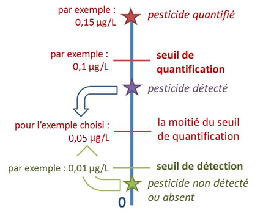

Visualisateur 3D
Informations sur l'application Viz'O
Pesticides totaux :
Les données représentées correspondent soit à la moyenne des concentrations totales en pesticides mesurées au cours de l’année sélectionnée au niveau de la station sélectionnée (pesticides totaux – moyenne), soit à la valeur maximale des concentrations totales mesurées au cours de l’année sélectionnée pour la station sélectionnée (pesticides totaux – maximum). Les concentrations totales correspondent à la somme des concentrations de tous les composés qui ont pu être quantifiés. Ainsi, des pesticides qui sont détectés mais dont la quantité est trop faible pour en permettre la quantification, ne sont pas pris en compte.
Chaque pesticide :
Les données représentées correspondent à la moyenne des concentrations du pesticide recherché qui ont été mesurées au cours de l’année sélectionnée au niveau de la station sélectionnée. Deux types de mesures sont prises en compte dans le calcul de la somme des concentrations du pesticide : les analyses quantifiées et celles non quantifiées. Les concentrations correspondent à la concentration mesurée dans l’échantillon dans le cas d’une analyse quantifiée. Dans le cas d’une analyse non quantifiée, la concentration attribuée à l’échantillon correspond à la moitié de la valeur constituant la limite de quantification de l’appareil de mesure, que le pesticide soit détecté ou non.
